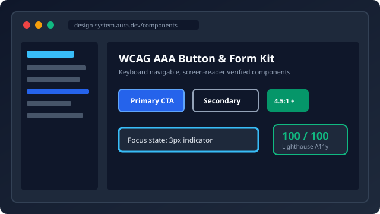
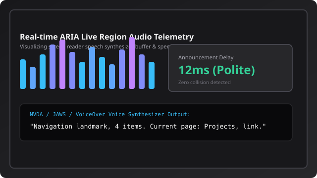

Aura Inclusive Design System
An open-source UI component library adhering strictly to WAI-ARIA Authoring Practices (APG) 1.2, featuring fully keyboard-operable modals, dropdowns, and forms.
I engineer web systems grounded in pure semantic HTML5, robust keyboard accessibility, and WCAG 2.2 Level AAA adherence. By treating digital accessibility as a core architectural foundation rather than an afterthought, I build digital products everyone can use seamlessly.
Every interface is audited against strict automated and assistive technology standards.
Perfect automated audit score covering color contrast, ARIA landmarks, form labeling, and tap targets.
Full indexability with semantic hierarchy, Schema.org JSON-LD, crawlable metadata, and sitemaps.
Zero keyboard traps, enhanced focus indicators (3px), and complete screen reader compatibility.
Strict compliance with official W3C Nu HTML and CSS specifications.
Explore real-world applications engineered with semantic markup and assistive device support.

An open-source UI component library adhering strictly to WAI-ARIA Authoring Practices (APG) 1.2, featuring fully keyboard-operable modals, dropdowns, and forms.

An audio-visual dashboard that analyzes ARIA live region announcement frequency, speech synthesizer latency, and prevents screen reader chatter collisions.
Whether you need a full WCAG 2.2 accessibility audit, a custom design system built with semantic HTML5, or engineering leadership on high-impact projects, let's connect.